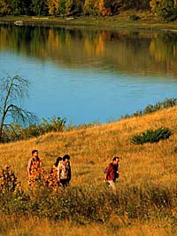

1872
1877
1900
1904
1911
1945
1947
1950
1968
1969
1970
1976
1986
1987
1988
1990
1991
1994
 The trees and forests of Saskatchewan affect everyone. Forests provide wildlife habitat, watershed protection, erosion control, ecosystem stability, recreational opportunities, employment, carbon storage, and aesthetic and spiritual values. Saskatchewan's forests are also a vital part of the province's economy. The forest industry has grown and developed over the years with an emphasis in today's industry on maintaining our forest ecosystems rather than wasting this valuable resource. |
Both the Government of Canada and the province of Saskatchewan have worked together to develop and maintain the forest sector. |

This cooperation continues today through a 1991 agreement called the Canada-Saskatchewan Partnership Agreement in Forestry. The agreement reflects a commitment, by both governments, to a sustainable development strategy. |

It places importance on both timber production and other forest resources values, such as water, wilderness, wildlife and recreational development. |
A summary of events in the history of the Saskatchewan Forest Industry.
The Dominion Lands Act designates the first commercial forest
zones in the area now known as Saskatchewan. This action allows
commercial use of the forested area.
Logs are taken out of bush camps at Sturgeon Lake and Anglin Lake. They are sent to Prince Albert via the Little Red River and the North Saskatchewan River.
The first saw mill opens in Prince Albert.
Four sawmills are operating at Big River, Crooked River, Prairie River and Prince Albert.
Logging crews of over 2000 men are employed during the winter in the Prince Albert area to cut and pile logs in one location. As many as 400,000 logs would be piled waiting for the spring thaw.
The largest sawmill in the British Commonwealth is operating at Big River. It can produce 1 million board feet of lumber per day.
A forestry board is established by the government of Saskatchewan. Their responsibility is to administer timber contracts and collect royalties.
The first forest inventory is completed on Saskatchewan's forests. The purpose is to assess the existing supply of trees.
The Saskatchewan Timber Board build a sawmill in Big River.
The Prince Albert Pulp Mill opens in Prince Albert. The 1960s saw an increase in demand for forest products leading to the construction of a waferboard plant and sawmill at Hudson Bay, a sawmill in Meadow Lake, a wood treatment plant in Prince Albert and a sawmill in Carrot River.
The sawmill at Big River is destroyed by fire.
Rebuilding the sawmill at Big River is completed.
The sawmill in Big River closed and construction on a new mill, ten kilometres south of Big River, is completed.
The Saskatchewan Division of Weyerhaeuser Canada is created when the Prince Albert Pulp Mill, Big River Sawmill, a Forest Management License Agreement area and Saskatoon Chemicals are acquired from the Saskatchewan government - effective September 9.
Sod is turned for the construction of a 216,000-ton fine paper mill in Prince Albert by Weyerhaeuser Canada Saskatchewan Division.
Expansion and modernization project is completed at Big River Lumber.
A new woodroom is built and capacity of the pulp mill is increased to 325,000 tonnes per year. (Note that paper is measured in tons and pulp in tonnes).
The pulp mill in Prince Albert expanded to include a paper producing mill.
The paper machine is started up in August.
A "cut size" sheeter is installed in Prince Albert to convert paper roll stock into business-size sheets.
A major plant expansion at Saskatoon Chemicals is completed.
Construction began on a pulp mill at Meadow Lake.
A "folio size" sheeter is installed in Prince Albert to convert paper roll stock into large sheet sizes suitable for commercial printers.
The first phase of a nine-year environmental upgrading program is initiated at Prince Albert Pulp and Paper.